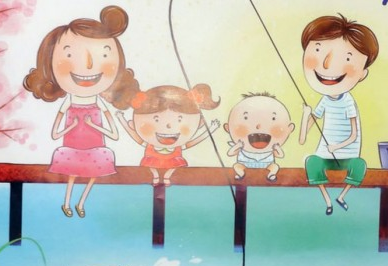

Семья и семейные ценности
В этом разделе вы узнаете:
- Что такое для человека семья?
- Что важнее всего в семье?
- Как воспитываются семейные ценности?
Что такое для человека семья? Слово, которое понятно всем. Оно с первых мгновений жизни рядом с каждым из нас.Семья – это дом, папа и мама, близкие люди. Это общие заботы, радости и дела. Это любовь и счастье. Семья – это тыл и фундамент, на котором строится вся жизнь. Все мы рождаемся в семье, а вырастая, создаем свою собственную. Так устроен человек.
Семьи бывают разные : веселые и счастливые, строгие и консервативные, несчастные и неполные. Почему так? Разные семьи имеют разные характеры, как люди. Если человек, как личность, определяет свою жизнь, исходя из своих жизненных приоритетов, то и семья, как комплекс, состоящий из отдельных личностей, взаимосвязанных между собой родственными и эмоциональными отношениями, строит свое настоящее и будущее, основываясь на собственных ценностях.
Семья и семейные ценности – это важнейший фундамент, на котором строится жизнь любого человека. Формирование личности начинается именно в семье: семейные ценности прививают нужные навыки для гармоничного развития целостной натуры.
Что важнее всего в семье? Очень трудно однозначно ответить на этот вопрос. Любовь? Взаимопонимание? Забота и участие? А может быть самоотверженность и трудолюбие? Или строгое соблюдение семейных традиций?
Семья и семейные ценности всегда неразрывно связаны между собой и друг без друга не существуют. Если семья отсутствует, то семейные ценности автоматически теряют свое значение. Ни одни узаконенные отношения между мужчиной и женщиной не существуют и никогда не существовали без основополагающих принципов. Именно благодаря им на протяжении многих лет супругам удается сохранить духовное здоровье, единство и целостность. На заботе и любви строятся традиционные семейные ценности.
Изменение и развитие общества, новые взгляды соответственно формируют и новое понимание семейных ценностей. Сегодня нравственные приоритеты родителей и детей значительно разнятся. У детей отношение к данному понятию обладает более прогрессивным, но жестким характером. Такая тенденция наблюдается ввиду того, что каждое последующее молодое поколение берет от предыдущего только самое необходимое, привносит в него собственные, актуальные в настоящее время, семейные обычаи и традиции. Безусловно, такие понятия, как доверие, любовь, взаимопомощь, уважение и доброта, остаются основополагающими и для человека 21-го века. Но, как ни печально, они подвергаются давлению со стороны самых разных факторов, которые обусловлены проблемами общества.
Согласно результатам социологических опросов, семейные национальные традиции и обычаи у молодежи стоят не на первом и даже не на втором местах. Их обогнали образование, карьера, взаимоотношения с друзьями, пристрастия. Чтобы сохранились традиционные семейные ценности, примеры для подрастающего поколения в первую очередь должны приводиться из личного жизненного опыта. И даже если кто-то вырос далеко не в такой благополучной среде и не смог впитать с воспитанием истинное любящее родственное отношение, необходимо постараться уже в осознанном возрасте наверстать упущенное и через отношение к ближнему постараться сделать этот мир лучше и светлее. Это под силу каждому.
Как воспитываются семейные ценности? Сегодня взаимодействия между близкими людьми могут условно подразделяться на современные и традиционные, и они иногда конфликтуют между собой. У каждого человека есть свое индивидуальное понятие о том, как сохранить отношения и брак. Чему-то в этом вопросе научили родители, что-то удалось уяснить из собственного жизненного опыта. Когда только сформировалась молодая семья, супруги не всегда задумываются о том, что значит чтить мнение партнера, считаться с его личным пространством. Нередко они сразу начинают ожидать друг от друга только хорошего и считают, что это хорошее должен создавать именно партнер. На этом этапе следует понять, что ответственность за гармоничный союз лежит как на мужчине, так и на женщине в равной степени. Здесь каждый, занимая свою позицию, согласно половой принадлежности, должен оберегать и культивировать все то, что в силах сделать брак удачным, а будущих детей – счастливыми. Идеалом можно не быть, но стараться нужно. В любой период взаимоотношений (неважно, это пара, прожившая в браке много лет, или молодая семья) необходимо заниматься самовоспитанием, работать над собой. Любые проблемы можно научиться решать мирно, что и станет началом пути к взаимному счастью. В результате в скором времени у супругов жизнь преобразится в лучшую сторону, наладится или трансформируется общение. Именно так, преодолевая сложности, и формируется настоящая семья, и семейные традиции становятся священными и уважаемыми среди всех сородичей.
Дети – цветы жизни. Ни в коем случае не стоит забывать и о самых маленьких. Детям в первую очередь нужен в семье мир и благополучие, ведь они являются самым незащищенным и уязвимым родовым звеном. К ним необходимо проявлять благосклонность и на собственном примере показывать, как важна семья, разъяснять, почему необходимо чтить традиции. Такое морально-нравственное воспитание не будет напрасным. Из-за информационного дефицита и из-за навязываемых обществом новых ценностей денег и статуса, дети отодвинули самые дорогие и необходимые составляющие своей нормальной жизни на второй план. Формирование у детей правильного понятия о жизни, об этических нормах станет залогом их счастливой семейной жизни в будущем. Разобраться малышам и подросткам в данной теме также помогают и школьные учреждения. В последнее время все чаще стал проводиться классный час, на котором семейные ценности являются главной темой для бесед. Это большой шаг вперед, так как правильное развитие самосознания ребенка поможет ему найти и свое место в жизни.

Основные семейные ценности
Для любой семьи перечень семейных ценностей будет содержать бесконечное количество пунктов. Но каждый из нас должен иметь четкое представление о тех семейных ценностях, которые способствуют укреплению фундамента для создания крепкой и дружной семьи. Знание моральных и нравственных устоев играет важную роль в укреплении доверия и повышения уверенности к каждому члену семьи.
- Чувство значимости и необходимости. Важно, чтобы каждый член семьи знал, что его любят, ценят, в нем нуждаются. Даже будучи сплоченной семьей, каждому члену семьи должно быть выделено пространство и предоставлена свобода для деятельности. Семья это то место, где можно собираться без «особых» случаев, праздников, это безопасное место, в которое можно вернуться, когда что-то не получилось, вас примут, выслушают, поддержат, помогут.
- Гибкость в решении семейных проблем – путь к счастью и ощущению комфорта. В каждой семье устанавливается свой порядок, режим дня, структура, правила. Но слишком много правил и порядка может привести к ухудшению отношений и появлению обид.
- Честность образует глубокую связь между членами семьи. Поощряйте честность, практикуя понимание, уважение любых поступков, которые совершают ваши близкие. Если вы будете сердиться на то, что произошло, вероятнее всего, в следующий раз от вас скроют информацию, чтоб избежать неуважения к своей личности.
- Необходимо научиться прощать людей, которые вас обидели. Все делают ошибки. Жизнь слишком коротка, чтобы тратить ее на обиды. От обидчика вам стоит получить ответы на все волнующие вас вопросы и сделать выбор – принять, простить, отпустить и идти дальше.
- Учитесь быть щедрыми на внимание, любовь, время, общение, даже на некоторые ваши материальные владения
- Общение – отдельное искусство. Передача информации, чувств – важный элемент становления семейных отношений. Когда люди чувствуют, что легко и открыто могут выражать свои мечты, надежды, страхи, успехи, неудачи, то это способствует только укреплению брачных уз. Отсутствие общения приводит к тому, что малые вопросы перерастают в более крупные, которые заканчиваются ссорами, избеганием, разводом.
- Ответственность. Все мы хотим казаться для других ответственными людьми. Некоторые из нас более ответственные, другие – менее ответственные. Чувство ответственности не требует много «подталкиваний», чтобы выполнить работу вовремя и правильно.
- Традиции - это то, что делает семью уникальной, они сплачивают всех членов семьи.
- Будьте примером для подражания. Взрослые выступают примером для своих детей. Они передают им свои навыки решения проблем, совместной работы, общения и др.
- Оцените свой вклад в развитие и укрепления ваших семейных уз. Хотя семейные отношения основаны на сильных кровных связях, все же в большой семье с течением времени чувства близости ослабевают, поэтому необходимо дополнительно прилагать усилия и уделять время для сохранения крепких семейных уз. Время от времени вы должны напоминать себе о важности семьи в вашей жизни.
Семья – это первая школа жизни для нового, только что появившегося на свет человечка, это среда, в которой он учится использовать свои способности, чтобы понять внешний мир и справится с его непредсказуемыми подарками. Все, что вы узнали из вашей семьи, становится вашей системой ценностей, на основе которых формируются ваши действия. Счастливая, радостная семейная жизнь – не случайность, а великое достижение, основанное на труде и выборе. Создание семьи – ответственный поступок, который потребует много времени, затрат, сил, энергии. Но это достойное дело, это наше главное дело жизни. Хочется, чтобы наши поступки были достойны уважения.